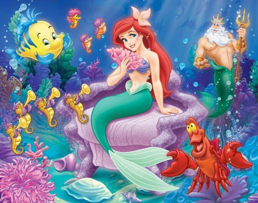

The Little Mermaid

The sea king lived in under the sea.
His palace was made of shells and sparkling stones.
His mother and six daughters also lived with him.
All his daughters were beautiful but his young daughter was the most beautiful.
She was not like the others. Her sisters liked to play.
But she liked to listen to stories.
Indeed, her grandmother said, “You will be able to see the world when you will be of fifteen years”.
Indeed, when she was fifteen years old, her grandmother decorated her hair with lilies.
Then she ordered eight oysters to attach themselves to her tail.
They started swimming up to the surface to the sea.
As they reached the surface, the little mermaid saw a large ship in which sailors were singing and dancing.
She quietly continues watching them.
In the evening, there was a celebration on the ship because of the sixteenth birthday of the prince.
The little mermaid was fascinated by the prince.
But alas! A terrible storm blew over the sea that night.
The little mermaid saw the ship sinking.
All the sailors drowned and she quickly dived in to the sea and saved the prince.
The prince was unconscious.
In the evening, there was a celebration on the ship because of the sixteenth birthday of the prince.
The little mermaid was fascinated by the prince.
But alas! A terrible storm blew over the sea that night.
The little mermaid saw the ship sinking.
All the sailors drowned and she quickly dived in to the sea and saved the prince.
The prince was unconscious.
Meanwhile, the little mermaid kept on thinking about the prince.
She tried to look for him but did not succeed.
When she told her sisters about him, her sisters found out his palace.
Now, she always waited near his palace to see him.
Her grandmother told her, “We live longer than humans, but their souls live forever.”
Now, the little mermaid wanted to have a human soul.
For this, she went to the sea witch who know the magic.
The witch said, “I will give you two human legs in exchange for your tail but you have to give me your voice
and if the prince loves another, you will change into White Sea foam.
The little mermaid nodded her head to say yes.
Then, the witch gave her a magic potion to drink.
When she drank the bitter portion, she became unconscious.
When she gained consciousness, she found herself in the arms of her prince.
She had two legs instead of a tail.
The prince took her back to the palace.
There, she enjoyed herself and dance away the whole day but she could neither speak nor sing.
She and the prince were happy.
One day the king ordered the prince to marry the daughter of a neighboring king.
When the prince saw the prince, he found her to be the same girl who had saved him on the beach.
The prince fell in love with her and then and there decided to marry her.
This saddened the little mermaid. She knew that her time of death was near and she tried to spend,
as much time as she could, with her prince.
But alas! She could not tell him of her love for him as she could not speak.
At the same time, her sisters come to know about this.
They brought her a magic knife from the witch.
They said, “Little sister! Little sister! Now you will have to kill the prince in the sleep.
Only after that can you come back to sea as a mermaid.
The little mermaid quietly came to the prince’ room at night.
She kissed him but could not stab him with the knife as she truly loved him.
So, after giving him last one look, she threw herself into the sea.
She found herself in the sky with the daughters of the sky – The twinkling stars.
And now she lives happily and joyfully with them.